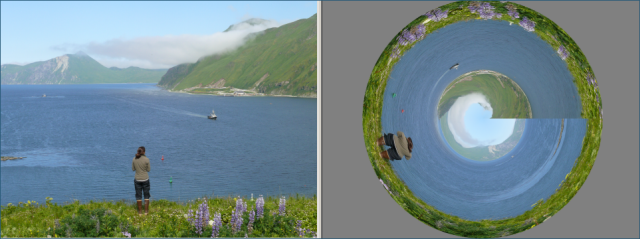

Artistic Effect: Polar Transformation
Previous
Top
Next
The Polar Transformation effect converts the row, column position of pixels into polar coordinates, or degrees and radius. This converts the photo into a round stylized image. You can specify the background color used to fill the corners.
